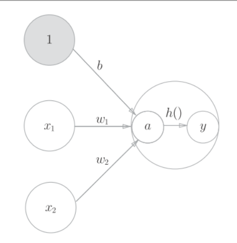
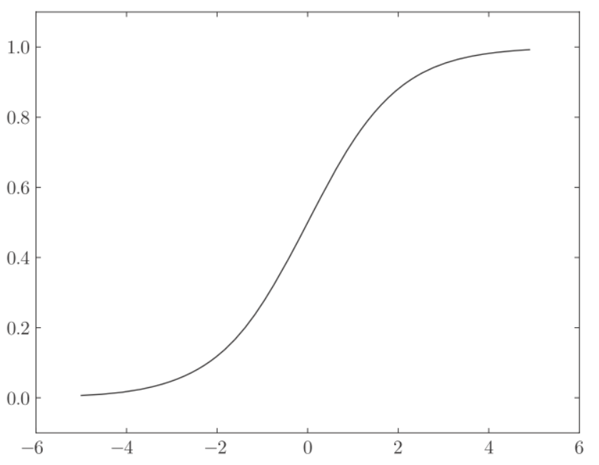
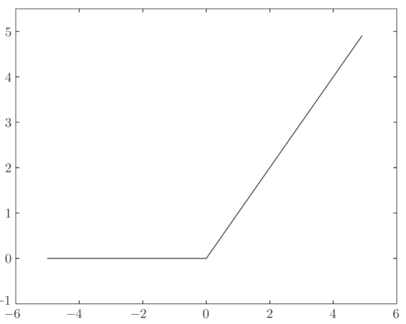

deeplearn_neuralnet
激活函数
以上公式可以简化为:
会将输入信号的加权和转换为0/1的输出信号, 这种函数被称为激活函数(activation funcation), 上述公式, 可以分解为:

sigmoid函数
其中, exp是指natural exponential function, 是Napier’s constant,
python实现:
def sigmoid(x):
return 1 / (1 + np.exp(-x))
x = np.array([-1.0, 1.0, 2.0])
sigmoid(x) # array([ 0.26894142, 0.73105858, 0.88079708])画出sigmoid函数
x = np.arange(-5.0, 5.0, 0.1)
y = sigmoid(x)
plt.plot(x, y)
plt.ylim(-0.1, 1.1) # 指定y轴的范围
plt.show()
感知机中的神经元是0/1的二元信号, 而神经网络中的神经元是连续的实数值信号.二者共性是:
- 输入小时, 输出接近为0
- 输入大时, 输出接近为1
- 二者均为非线性函数
ReLU函数
sigmoid函数很早就开始被使用了，而最近则主要使用ReLU（Rectified Linear Unit）函数.
python实现
def relu(x):
return np.maximum(0, x)
神经网络内积
下图神经网络省略了偏置和激活函数.
要注意的形状, 特别是对应维度的元素个数是否一致.
python实现:
X = np.array([1, 2])
X.shape # (2,)
W = np.array([[1, 3, 5], [2, 4, 6]])
# [[1 3 5]
# [2 4 6]]
W.shape # (2, 3)
Y = np.dot(X, W)
# [ 5 11 17]使用矩阵运算替代for循环, 提高了计算效率.
三层网络实现
表示前一层第2个神经元到后一层第1个神经元的权重

下图是从输入层, 到第1层的第一个神经元的信号传递过程:

公式如下:
矩阵公式如下:
其中:
python实现第一层网络传播:
X = np.array([1.0, 0.5])
W1 = np.array([[0.1, 0.3, 0.5], [0.2, 0.4, 0.6]])
B1 = np.array([0.1, 0.2, 0.3])
print(W1.shape) # (2, 3)
print(X.shape) # (2,)
print(B1.shape) # (3,)
A1 = np.dot(X, W1) + B1
Z1 = sigmoid(A1)
print(A1) # [0.3, 0.7, 1.1]
print(Z1) # [0.57444252, 0.66818777, 0.75026011]

python实现第二层的网络传播:
W2 = np.array([[0.1, 0.4], [0.2, 0.5], [0.3, 0.6]])
B2 = np.array([0.1, 0.2])
print(Z1.shape) # (3,)
print(W2.shape) # (3, 2)
print(B2.shape) # (2,)
A2 = np.dot(Z1, W2) + B2
Z2 = sigmoid(A2)
python实现第三层的网络传播:
基本和之前的实现相同, 不过激活函数却不相同
def identity_function(x):
return x
W3 = np.array([[0.1, 0.3], [0.2, 0.4]])
B3 = np.array([0.1, 0.2])
A3 = np.dot(Z2, W3) + B3
Y = identity_function(A3) # 或者Y = A3identity_function()也称为恒等函数, 并将其作为输出层的激活函数. 注意输出层的激活函数用表示, 不同于隐藏层的激活函数.
输出层所用的激活函数, 要根据解决的具体问题决定.
- 回归问题使用identity函数
- 二元分类使用sigmoid函数
- 多元分类使用softmax函数

输出层设计
一般而言, 回归问题用identity函数, 分类问题用softmax函数.
identity函数表示:
输入信号原封不动的输出

softmax函数表示:
exp(x)表示的是的指数函数, e是Napier常数,加入输出层有n个神经元, 计算第k个神经元的输出.softmax函数的分子是输入信号的指数函数, 分母是所有输入信号的指数函数的和.
softmax 函数的输出通过箭头与所有的输入信号相连。这是因为softmax的分母与输出层的各个神经元都受到所有输入信号的影响。

python实现:
def softmax(a):
exp_a = np.exp(a)
sum_exp_a = np.sum(exp_a)
y = exp_a / sum_exp_a
return y使用softmax函数
a = np.array([0.3, 2.9, 4.0])
y = softmax(a) # [ 0.01821127 0.24519181 0.73659691]
np.sum(y) # 1softmax函数的输入是0/1之间的实数, 并且函数的输出值总和是1, 所以可以把softmax函数的输出解释为概率.
使用softmax函数, 输出值最大的神经元的位置不会改变, 因此在使用神经网络进行分类时, 输出层的softmax函数可以省略, 因为指数函数的运算需要一定的运算量. softmax只在训练的时候使用.